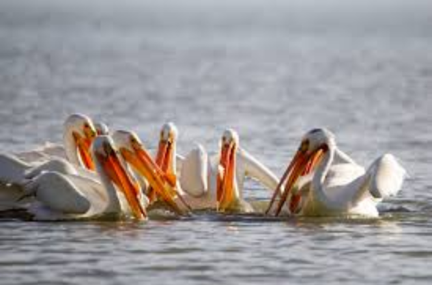

새들의 사회적 행동
천적으로부터의 안전
효율적인 먹이활동
무리의 적정 크기
효율적인 먹이활동
무리 형성을 통해 먹이가 많은 곳을 쉽게 찾을 수 있음
다른 새들이 잡으려다 놓친 먹이, 다른 새가 날린 벌레 등 어부지리
어떤 펠리칸들은 물고기를 잡기위해 협력하기도 함.

일반적으로 사냥해야 하는 새들보다는, 종자(씨앗)을 먹는 새들이 무리짓는 경우가 많음.